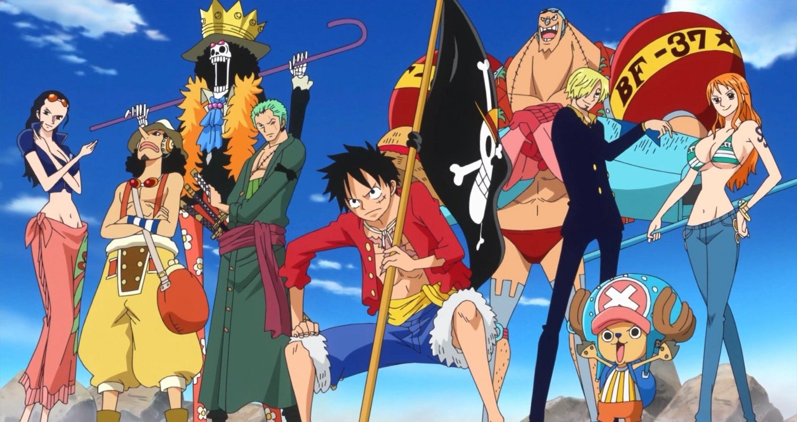

He is famously known as "Straw Hat". He is the founder and captain of the increasingly infamous and powerful Straw Hat Pirates. He's goofy, a foodie, an adventurer and extraordinarily selfless. He would do anyting to protect his friends and family.
Luffy and his friends
Luffy has awesome friends, they all have different personalities of their own. I like the character Roronoa Zoro, he's the right hand and the first member of the StrawHat's. Read in more details about his friends.
He's the swordsman of the group and doesn't have sense of direction. Zoro usually maintains a very stern, serious , and distanced personality,but often loses his temper in a goofy and exaggerated comical style.
Usopp is the sniper of the Straw Hat Pirates and became "God" Usopp due to some circumstances. Usopp has a pessimistic, cowardly personality and you can say he's the best buddy of Luffy while having fun.
Sanji is a noticeable character, he is kind, calm, cool, and collected manner in which he carries himself. He's the cook, without him Luffy may die due to starvation. He's a womanizer, romantic and everyody loves his chivalry towards women.
Nami, if she is missing, they would have been lost somewhere in the end of the world. She is the best navigator as per Luffy. She can trade anything for money even her friends.
Chopper, a cute and cuddly reindeer cum doctor of the ship, who ate a Human-Human fruit. He's get pretty scared at everything and has the zeal to learn medicines all over the world.
she's the expert in archealogy and loves to learn about all the ancient history of the world. she is currently the only person in the world known to have the ability to read and decipher Poneglyphs, a skill which is considered forbidden and threatening to the World Government.
He is the shipwright, who fixes the ship whenever Luffy wrecks the Mary or Sunny. Franky is an exhibitionist and a self proclaimed pervert and has a very slow slow fashion, loves to e only in an underwear. he's the robo-cup and Luffy loves all the technological cool stuff of his.
He's pretty much the ghost who devoured the Revive-Revive fruit accidentally after he was dead. He's a total skeleton, whenever introduces himself to the ladies always asks to see their panties.
Jinbe is the whole shark fish-man and was one of the seven warlords of the sea. He is the tenth member of the gang.